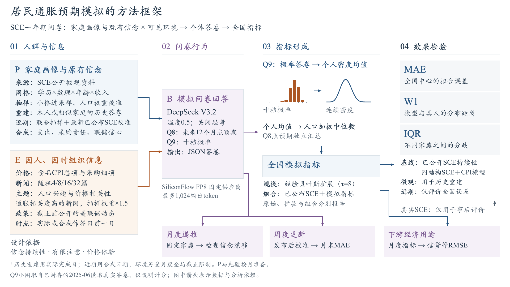

居民通胀预期模拟的方法框架 · v3
论文审阅稿。主模拟突出MAE、W1与IQR；下游RMSE单独呈现。保留楷体、Times New Roman和关键机制，增加真实Q9计分示例并重排动态分支。
作者已手调PPT布局与文字，下面的PDF/PNG预览尚未同步；请以下载的PPT作为当前编辑基底。

论文审阅稿。主模拟突出MAE、W1与IQR；下游RMSE单独呈现。保留楷体、Times New Roman和关键机制，增加真实Q9计分示例并重排动态分支。
作者已手调PPT布局与文字，下面的PDF/PNG预览尚未同步；请以下载的PPT作为当前编辑基底。
